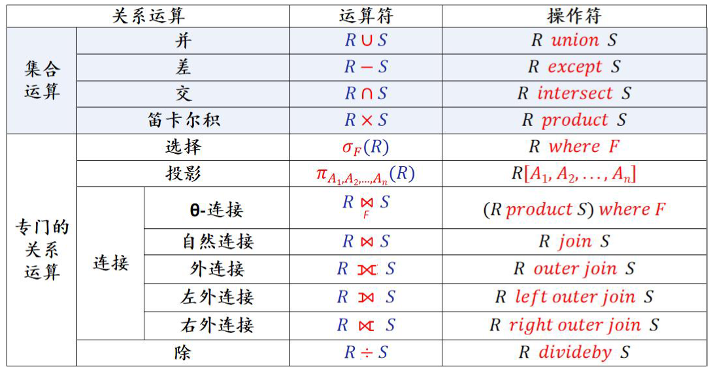
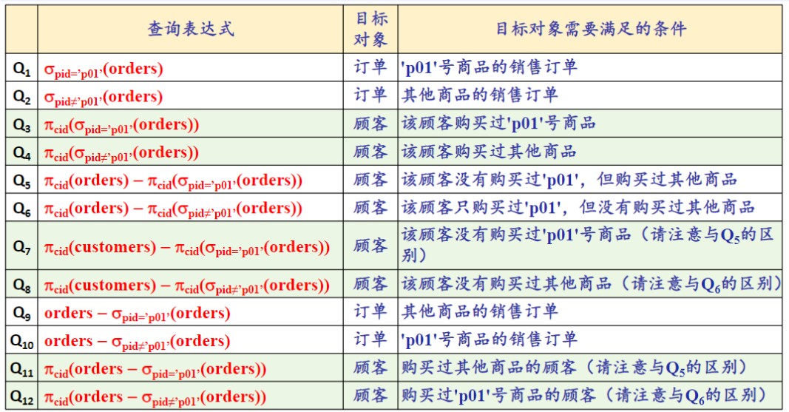

数据管理基础-2.2关系代数基本运算
关系代数概述
关系代数：一种抽象的查询语言，用关系运算来表达对关系的操作
- 集合运算符：传统的集合运算从关系的“水平”方向，即行的角度进行
- 专门的关系运算符
常用关系操作：
- 集合操作：并、交、差、笛卡尔积
- 专门的关系操作：
- 选择、投影
- 连接（包括 -连接，自然连接，外连接等）
- 除
5 种基本操作：选择、投影、并、差、笛卡尔积

记号表示：
- 关系设为
- 表示 t 是 R 中的一个元组
- 表示元组 t 相应于属性 的一个分量
- 表示元组的连接
- 象集 images set:
- : 表示 R 中属性组 X 上值为 x 的诸元组在 上分量的集合
关系代数的基本运算
- 一般通过属性名来确定一个属性的语义，采用“同名同义、异名异义”

并 Union:
- 满足交换律和结合律
差 Difference
- 不满足交换律和结合律
笛卡尔积
选择 Selection 又称为限制 Restriction
投影：
- 或
- 略去关系 𝐀 中的某些列，并重新安排结果关系中列的排列次序的运算
关系代数基本运算的应用
例

数据管理基础-2.2关系代数基本运算
https://astronautbase.github.io/2025/03/12/数据管理基础-2-2关系代数基本运算/